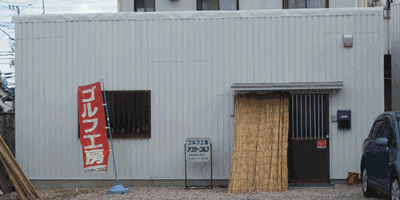
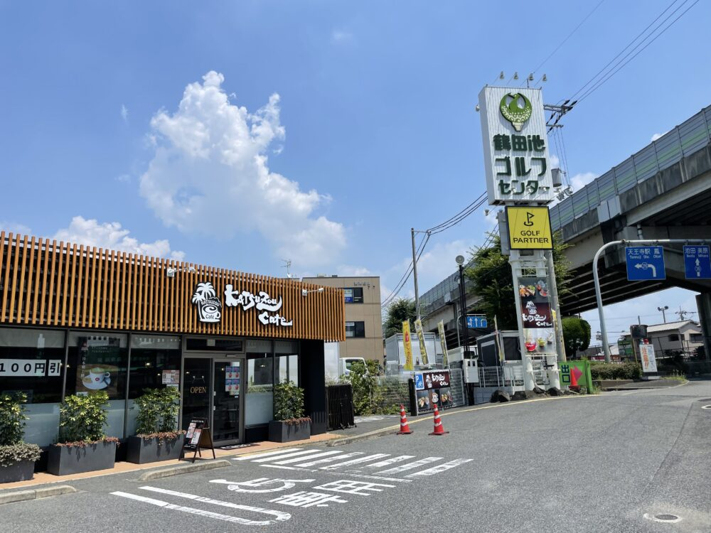
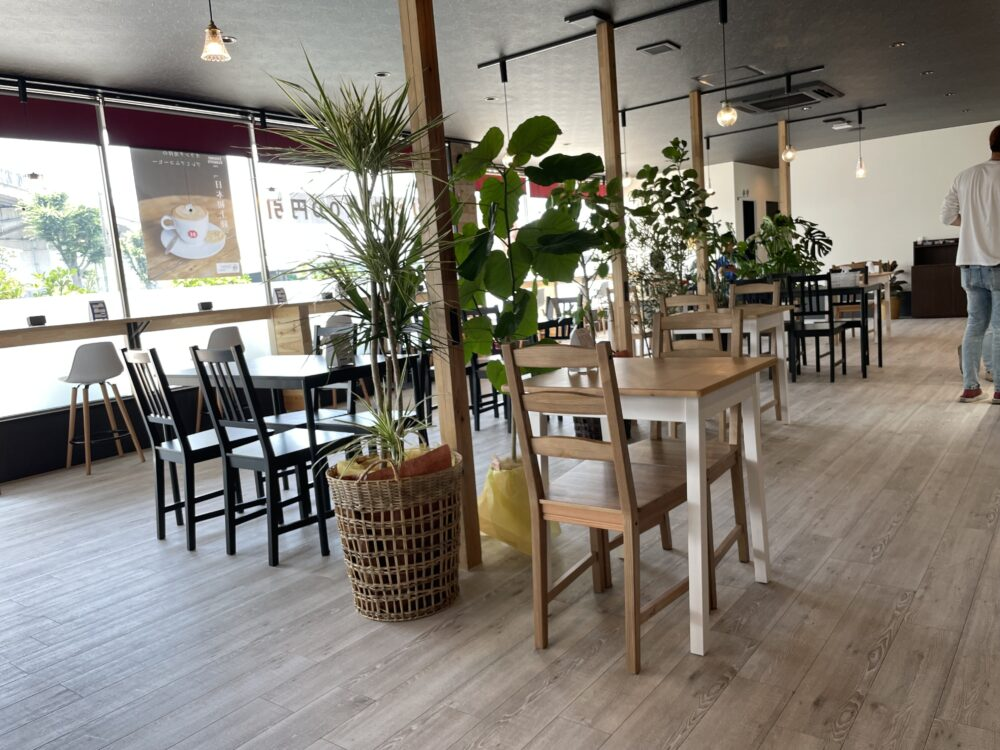
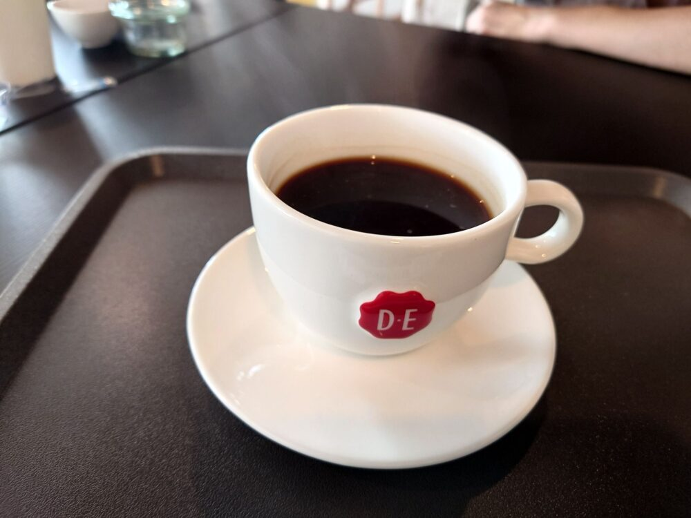
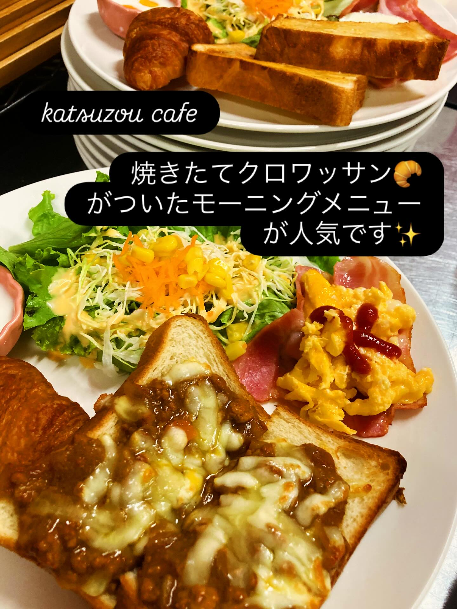

鶴田池ゴルフセンター
TSURUTAIKE GOLF CENTER
お問合せ072-273-6600
当センターに隣接するアフターゴルフ工房。
クラブの修理・リペア、その他ゴルフクラブに関する
あらゆるトラブルを解決いたします。

アフターゴルフ工房 外観 駐車場内の場所
駐車場内の場所
こんなお悩みはありませんか？

鶴田池ゴルフセンター敷地内に誕生した、緑あふれる癒しのカフェ。
白と木を基調としたナチュラルな店内は、大きな窓から自然光が差し込む開放的な空間。
創業270年以上のオランダ老舗ブランド「ダウエグバーツ」の珈琲とともに、ゆったりとした時間をお過ごしください。




こだわりの珈琲・紅茶
ダウエグバーツ珈琲のほか、高級茶葉 Mighty Leaf を使用した紅茶もお愉しみください。
45パターン以上のモーニング
トースト・ドッグ・ハーフ＆ハーフ、たまごの調理法も選べる充実のモーニング。550円〜。
フリーWi-Fi・コンセント完備
テレワークや勉強にもぴったり。ゆっくりと過ごせる心地よい空間です。
テイクアウトOK
ドリンク・フードはすべてテイクアウト対応。練習前の一杯にも。
OTHER FACILITIES — 2027 RENEWAL OPEN
明るいフロントでお客様をお出迎えします。
最長300ヤード・全100打席。ふかふかカーペットの快適打席。
センター内にゴルフパートナー販売店常設。充実の品揃え。
ロッカールーム・全自動ウォシュレット・館内フリーWifi完備。